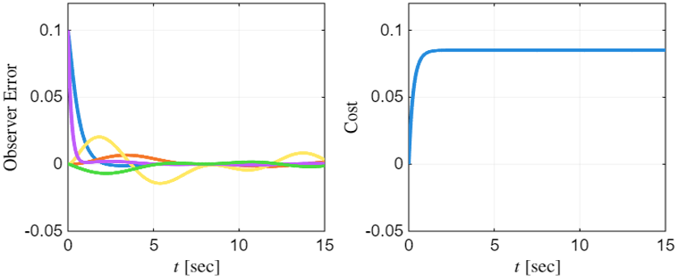
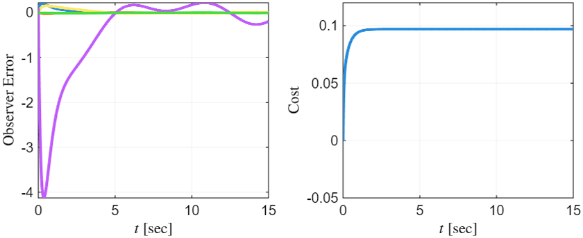

Welcome!
I am a postdoctoral fellow at the Oden Institute for Computational Engineering & Sciences at UT Austin, working with Prof. Ufuk Topcu. I received my Ph.D. in Aerospace Engineering (2024) from Georgia Tech under Prof. Kyriakos G. Vamvoudakis.
I develop theory and algorithms that enable autonomous systems to operate securely and reliably in congested and contested environments. My research is motivated by the growing scale of air and space operations, as urban air mobility and large satellite constellations introduce new challenges for coordination, security, and resilience. I design decision-making algorithms that (i) reason strategically about and coordinate with other agents, (ii) influence and evade adversaries, and (iii) adapt to uncertainty, interference, and attacks. My work draws from game theory, control theory, and machine learning to ground autonomy in rigorous mathematical principles.
Recent News
- [March 2025] Our paper "Input-Output Data-Driven Sensor Selection for Cyber-Physical Systems" is conditionally accepted in Automatica!
- [Feb 2025] I received the Reviewer of the Year Award from the ASME Journal of Dynamic Systems, Measurement and Control.
- [April 2024] I was selected as a Rising Star in Cyber-Physical Systems for 2024 (20% acceptance rate).
- [Jan 2024] I was selected as an Outstanding Reviewer of IEEE Control Systems Letters for 2023.
Featured Research
Adversarial Pursuits in Cislunar Space
Paper: [AIAA SciTech 2026]
Collaborators: Quentin Rommel, Gregory Falco, Ufuk Topcu
We study pursuit–evasion between two spacecraft in cislunar orbit, formulated as a zero-sum dynamic game in the circular restricted three-body problem. The evader avoids capture by adjusting its orbital phasing and exploiting the orbit’s stable and unstable manifolds.

Coordinated UAV Beamforming and Control for Directional Jamming and Nulling
Paper: [arXiv 2025]
Collaborators: Brian M. Sadler, Ufuk Topcu
We study the coordinated beamforming and control problem for a UAV equipped with two omnidirectional antennas, which it uses to jam an eavesdropper while leaving a friendly client unaffected. Our formulation jointly optimizes position, antenna orientation, and phase to realize directional jamming, such as selective GPS denial, while minimizing interference to protected receivers.

Optimal Satellite Maneuvers for Spaceborne Jamming Attacks
Paper: [AIAA SciTech 2026]
Collaborators: Quentin Rommel, Brian M. Sadler, Ufuk Topcu
We consider a rogue satellite in low Earth orbit that jams the uplink communication between another satellite and a ground station. To achieve maximal interference with minimal fuel consumption, the jammer carefully maneuvers itself relative to the target satellite's antenna. We cast this maneuvering objective as a two-stage optimal control problem, involving (i) repositioning to an efficient jamming position before uplink communication commences; and (ii) maintaining an efficient jamming position after communication has started.
Noncooperative Equilibrium Selection via a Trading-Based Auction (TACo)
Paper: [arXiv 2025]
Collaborators: Jaehan Im, Daniel Delahaye, Ufuk Topcu, David Fridovich-Keil
We propose an algorithm named trading auction for consensus (TACo), a decentralized approach that enables noncooperative agents to reach consensus without communicating directly or disclosing private valuations. TACo facilitates coordination through a structured trading-based auction, where agents iteratively select choices of interest and provably reach an agreement within an a priori bounded number of steps.
Projects
Current Projects
Adversarial Pursuits in Cislunar Space
Paper: [AIAA SciTech 2026]
Collaborators: Quentin Rommel, Gregory Falco, Ufuk Topcu
We study pursuit–evasion between two spacecraft in cislunar orbit, formulated as a zero-sum dynamic game in the circular restricted three-body problem. The evader avoids capture by adjusting its orbital phasing and exploiting the orbit’s stable and unstable manifolds.
Coordinated UAV Beamforming and Control for Directional Jamming and Nulling
Paper: [arXiv 2025]
Collaborators: Brian M. Sadler, Ufuk Topcu
We study the coordinated beamforming and control problem for a UAV equipped with two omnidirectional antennas, which it uses to jam an eavesdropper while leaving a friendly client unaffected. Our formulation jointly optimizes position, antenna orientation, and phase to realize directional jamming, such as selective GPS denial, while minimizing interference to protected receivers.
Optimal Satellite Maneuvers for Spaceborne Jamming Attacks
Paper: [AIAA SciTech 2026]
Collaborators: Quentin Rommel, Brian M. Sadler, Ufuk Topcu
We consider a rogue satellite in low Earth orbit that jams the uplink communication between another satellite and a ground station. To achieve maximal interference with minimal fuel consumption, the jammer carefully maneuvers itself relative to the target satellite's antenna. We cast this maneuvering objective as a two-stage optimal control problem, involving i) repositioning to an efficient jamming position before uplink communication commences; and ii) maintaining an efficient jamming position after communication has started.
Noncooperative Equilibrium Selection via a Trading-Based Auction (TACo)
Paper: [arXiv 2025]
Collaborators: Jaehan Im, Daniel Delahaye, Ufuk Topcu, David Fridovich-Keil
We propose an algorithm named trading auction for consensus (TACo), a decentralized approach that enables noncooperative agents to reach consensus without communicating directly or disclosing private valuations. TACo facilitates coordination through a structured trading-based auction, where agents iteratively select choices of interest and provably reach an agreement within an a priori bounded number of steps.
Approximate Feedback Nash Equilibria with Sparse Inter-Agent Dependencies
Paper: [arXiv 2025]
Collaborators: Xinjie Liu, Jingqi Li, Mustafa O. Karabag, Jesse Milzman, David Fridovich-Keil, Ufuk Topcu
We propose a regularized dynamic programming approach for finding sparse feedback policies that selectively depend on the states of a subset of agents in dynamic games. The proposed approach solves convex adaptive group Lasso problems to compute sparse policies approximating Nash equilibrium solutions. We prove the regularized solutions' asymptotic convergence to a neighborhood of Nash equilibrium policies in linear-quadratic (LQ) games. Further, we extend the proposed approach to general non-LQ games via an iterative algorithm.

Deception Against Data-Driven Linear-Quadratic Control
Paper: [arXiv 2025]
Collaborators: Aris Kanellopoulos, Kyriakos G. Vamvoudakis, Ufuk Topcu
We consider a setting where an adversary tries to learn the optimal linear-quadratic attack against a system, the dynamics of which it does not know. On the other end, a defender who knows its dynamics exploits its information advantage and injects a deceptive input into the system to mislead the adversary. We design the defender's deceptive input stratigically, forcing the adversary to learn, as closely as possible, a pre-selected attack that is different from the optimal one.
Adversarial Observability and Performance Tradeoffs in Optimal Control
Paper: [arXiv 2025]
Collaborators: Ufuk Topcu
We develop a feedback controller that minimizes the observability of adversarial sensors in a linear system while satisfying strict closed-loop performance constraints. We measure sensor effectiveness using the trace of the observability Gramian and its inverse, capturing both average and least observable state directions. We establish theoretical lower bounds on these metrics under performance constraints and optimize them using semidefinite programming.
Adversary's observer error using the nominal optimal controller.
Adversary's observer error using the proposed low-observability controller.
Prior Projects
Input-Output Data-Driven Sensor Selection for Cyber-Physical Systems
Paper: [Automatica 2025]
Collaborators: Kyriakos G. Vamvoudakis
We propose the first model-free sensor selection framework for unknown cyber-physical systems (CPS). Given a large pool of available sensors, our goal is to select a subset that maximizes the system’s observability. Unlike existing methods that rely on explicit system models, our approach performs this optimization directly from input–output data, without prior knowledge of the system dynamics.
A Physics-Informed Learning Framework for Infinite-Horizon Optimal Control
Paper: [Int. J. Robust & Nonlinear Control 2025]
Collaborators: Kyriakos G. Vamvoudakis
We propose a physics-informed neural network (PINN) framework to solve the infinite-horizon optimal control problem for nonlinear systems. To address the challenge of multiple solutions in the corresponding steady-state Hamilton–Jacobi–Bellman (HJB) equation, we instead apply PINNs to a finite-horizon variant of the HJB equation that admits a unique solution, which uniformly approximates the optimal value function as the horizon length increases.
On the Effect of Clock Offsets and Quantization on Learning-Based Adversarial Games
Paper: [Automatica 2024]
Collaborators: Aris Kanellopoulos, Kyriakos G. Vamvoudakis, Jerome Hugues
We consider an off-policy iterative reinforcement learning (RL) algorithm for continuous-time systems, which uses input–state data to approximate the Nash equilibrium of a zero-sum game. However, the data employed by this algorithm are temporally inconsistent, as each sample originates from a slightly different past time instant. We prove that, under a Lipschitz continuity assumption and provided that these timing inconsistencies remain below a prescribed threshold, the off-policy iterative RL algorithm still converges epsilon-closely to the desired Nash policy.
Input-Constrained Prescribed Performance Control for High-Order MIMO Uncertain Nonlinear Systems
Paper: [IEEE TAC 2024]
Collaborators: George A. Rovithakis
We develop an approximation-free prescribed-performance controller for uncertain nonlinear systems that remains stable under strict actuator saturation. The controller dynamically relaxes and restores the reference to prevent internal instability and ensure bounded closed-loop signals. We also quantify the resulting performance distortion, providing explicit guarantees on tracking accuracy under input constraints.
Data-Driven Actuator Allocation for Actuator-Redundant Systems
Paper: [IEEE TAC 2024]
Collaborators: Kyriakos G. Vamvoudakis, Zhong-Ping Jiang
We consider the problem of optimally augmenting an actuator redundant system with additional actuators, so that the energy required to meet a given control objective is minimized. We study two cases: one where the control objective is unknown, and another where it is defined by a linear state-feedback law. In the latter case, we relax the need for explicit system models by using trajectory data to iteratively approximate the antistabilizing solution of an associated algebraic Riccati equation.
Learning-Based Actuator Selection for Increased Attack Resilience
Paper: [Automatica 2024]
Collaborators: Kyriakos G. Vamvoudakis
We consider a security-aware and learning-based actuator selection formulation for cyber-physical systems. A set of actuators is chosen to be used by the system so that a metric of controllability and actuation attack resilience is maximized, given only partial knowledge of the physics of the system.
Recursive Reasoning with Reduced Complexity and Intermittency for Non-Equilibrium Learning in Stochastic Games
Paper: [IEEE TNNLS 2023]
Collaborators: Kyriakos G. Vamvoudakis
We develop a computationally and communicationally efficient framework for decision-making in nonequilibrium stochastic games. By modeling agents with bounded rationality through level-k and cognitive-hierarchy reasoning, we capture more realistic behaviors than standard Nash equilibria. We introduce recursive and parallel algorithms that compute these boundedly rational strategies efficiently.
Concurrent Receding Horizon Control and Estimation Against Stealthy Attacks
Paper: [IEEE TAC 2023]
Collaborators: Kyriakos G. Vamvoudakis
We present a game-theoretic framework for cyber-physical systems in which a defender mitigates attacks from an intelligent adversary that exploits system uncertainty to remain undetected. The defender jointly performs receding-horizon control and estimation, optimizing a robust performance cost that accounts for stealthy attacks. Theoretical analysis guarantees closed-loop boundedness despite the defender's information disadvantage, and simulations corroborate these results.
Nonequilibrium Dynamical Games: A Control Systems Perspective
Paper: [Annual Reviews in Control 2022]
Collaborators: Kyriakos G. Vamvoudakis, Aris Kanellopoulos, Nick-Marios T. Kokolakis
Dynamical games model strategic interactions between agents in changing environments, which is increasingly important as autonomous systems become more prevalent in society. This work applies bounded rationality concepts from economics—specifically level-k thinking and cognitive hierarchy—to predict nonequilibrium solutions in differential games using control theory frameworks. The approach is demonstrated through UAV pursuit-evasion scenarios and extended to stochastic games, providing rigorous mathematical guarantees for predicting game outcomes in both competitive and cooperative settings.
Prescribed Performance Control for Discontinuous Output Reference Tracking
Paper: [IEEE TAC 2021]
Collaborators: George A. Rovithakis
This article presents a low-complexity prescribed performance tracking controller for uncertain multi-input multi-output nonlinear systems that guarantees tracking errors converge within fixed time with predefined maximum overshoot, even with discontinuous reference signals. The approach modifies standard prescribed performance control by incorporating impulsive dynamics, eliminating the need to predict future reference values or discontinuity timings.
Detection of Actuator Faults for Continuous-Time Systems with Intermittent State Feedback
Paper: [Systems & Control Letters 2021]
Collaborators: Kyriakos G. Vamvoudakis
We present a fault detection method for uncertain continuous-time systems with intermittent state measurements, identifying actuator faults that create state evolutions incompatible with the system model. A necessary and sufficient detection condition is derived and relaxed for computational efficiency through a boundary-value problem formulation.
Publications
Books
- A. Kanellopoulos, L. Zhai, F. Fotiadis, K. G. Vamvoudakis, "Control and Game Theoretic Methods for Cyber-Physical Security," Elsevier, 2024.
Journal Papers
- S. Niu, A. Bouland, H. Wang, F. Fotiadis, A. Kurdila, A. L'Afflitto, S. T. Paruchuri, K. G. Vamvoudakis, "Tailoring Reproducing Kernels for Optimal Control via Policy Iteration," submitted.
- X. Liu, J. Li, F. Fotiadis, M. O. Karabag, J. Milzman, D. Fridovich-Keil, U. Topcu, "Approximate Feedback Nash Equilibria with Sparse Inter-Agent Dependencies," submitted.
- F. Fotiadis, U. Topcu, "Adversarial Observability and Performance Tradeoffs in Optimal Control," submitted.
- J. Im, F. Fotiadis, D. Delahaye, U. Topcu, D. Fridovich-Keil, "Noncooperative Equilibrium Selection via a Trading-based Auction," submitted.
- F. Fotiadis, A. Kanellopoulos, K. G. Vamvoudakis, U. Topcu, "Deception Against Data-Driven Linear-Quadratic Control," submitted.
- N. Tukenmez, F. Fotiadis, J. M. Magalhães Júnior, K. G. Vamvoudakis, S. Bogosyan, "Intermittent Learning for Trajectory Tracking Control with an Experimental Validation on Microdrones," submitted.
- F. Fotiadis, K. G. Vamvoudakis, "Input-Output Data-Driven Sensor Selection for Cyber-Physical Systems," Automatica, conditionally accepted, 2025.
- F. Fotiadis, K. G. Vamvoudakis, "A Physics-Informed Learning Framework to Solve the Infinite-Horizon Optimal Control Problem," International Journal of Robust and Nonlinear Control, 2025.
- S. Niu, A. Bouland, H. Wang, F. Fotiadis, A. Kurdila, A. L'Afflitto, S. T. Paruchuri, K. G. Vamvoudakis, "Convergence Rates of Online Critic Value Function Approximation in Native Spaces," IEEE Control Systems Letters, vol. 8, pp. 2145-2150, 2024.
- F. Fotiadis, A. Kanellopoulos, K. G. Vamvoudakis, J. Hugues, "On the Effect of Clock Offsets and Quantization on Learning-based Adversarial Games," Automatica, vol. 167, paper 111762, 2024.
- F. Fotiadis, G. A. Rovithakis, "Input-Constrained Prescribed Performance Control for High-order MIMO Uncertain Nonlinear Systems," IEEE Transactions on Automatic Control, vol. 69, no. 5, pp. 3301-3308, 2024.
- F. Fotiadis, K. G. Vamvoudakis, Z.-P. Jiang, "Data-Driven Actuator Allocation for Actuator Redundant Systems," IEEE Transactions on Automatic Control, vol. 69, no. 4, pp. 2249-2264, 2024.
- F. Fotiadis, K. G. Vamvoudakis, "Learning-based Actuator Selection for Increased Attack Resilience of Uncertain Systems," Automatica, vol. 159, paper 111332, 2024.
- F. Fotiadis, K. G. Vamvoudakis, "Recursive Reasoning with Reduced Complexity and Intermittency for Non-Equilibrium Learning in Stochastic Games," IEEE Transactions on Neural Networks and Learning Systems, vol. 34, no. 11, pp. 8467-8481, 2023.
- F. Fotiadis, K. G. Vamvoudakis, "Concurrent Receding Horizon Control and Estimation against Stealthy Attacks," IEEE Transactions on Automatic Control, vol. 68, no. 6, pp. 3712-3719, 2023.
- K. G. Vamvoudakis, F. Fotiadis, A. Kanellopoulos, N.-M. T. Kokolakis, "Nonequilibrium Dynamical Games: A Control Systems Perspective," Annual Reviews in Control, vol. 53, pp. 6-18, 2022.
- F. Fotiadis, G. A. Rovithakis, "Prescribed Performance Control for Discontinuous Output Reference Tracking," IEEE Transactions on Automatic Control, vol. 66, no. 9, pp. 4409-4416, 2021.
- F. Fotiadis, K. G. Vamvoudakis, "Detection of Actuator Faults for Continuous-Time Systems with Intermittent State Feedback," Systems & Control Letters, vol. 152, paper 104938, 2021.
Conference Papers
- F. Fotiadis, B. M. Sadler, U. Topcu, "Coordinated UAV Beamforming and Control for Directional Jamming and Nulling," submitted.
- G. Cooper, N. Tsao, F. Fotiadis, U. Topcu, R. Marculescu, "Learning from Sparse and Asynchronous Data Streams for Batteryless Sensors," submitted.
- F. Fotiadis, Q. Rommel, G. Falco, U. Topcu, "Adversarial Pursuits in Cislunar Space," to appear in AIAA SciTech Forum, Orlando, FL, 2026.
- F. Fotiadis, Q. Rommel, B. M. Sadler, U. Topcu, "Optimal Satellite Maneuvers for Spaceborne Jamming Attacks," to appear in AIAA SciTech Forum, Orlando, FL, 2026.
- I. Sharifi, M. Ghazanfari, A. Taye, P. Wei, M. H. Ahmed, H. T. Kim, M. Ghasemi, V. Gupta, N. Dahle, R. Canady, A. D. Gonzalez, A. Coursey, B. Bjorkman, C. L. Mack, B. C. Ward, X. Koutsoukos, G. Biswas, S. Hasan, I. Amundson, F. Fotiadis, U. Topcu, J. Lu, Q. A. Chen, N. Aryal, A. Ibrahim, K. Ras, A. Shirkhodaie, "A Survey of Security Challenges and Solutions for UAS Traffic Management (UTM) and small Unmanned Aerial Systems (sUAS)," to appear in AIAA SciTech Forum, Orlando, FL, 2026.
- M. Ghazanfari, I. Sharifi, A. Taye, P. Wei, B. C. Ward, X. Koutsoukos, G. Biswas, N. Dahle, R. Canady, A. D. Gonzalez, A. Coursey, B. Bjorkman, C. L. Mack, M. Ghasemi, M. H. Ahmed, H. T. Kim, V. Gupta, F. Fotiadis, U. Topcu, A. Chen, J. Lu, A. Shirkhodaie, N. Aryal, A. Ibrahim, K. Ras, S. Hasan, I. Amundson, "A Survey of Security Challenges and Solutions for Advanced Air Mobility and eVTOL Aircraft," to appear in AIAA SciTech Forum, Orlando, FL, 2026.
- N. Tukenmez, J. Magalhães, F. Fotiadis, K. G. Vamvoudakis, A. Homaifar, "A Comprehensive Review of Trajectory Planning in Swarm Drones: Methods, Challenges and Future Directions," to appear in AIAA SciTech Forum, Orlando, FL, 2026.
- K. G. Vamvoudakis, F. Fotiadis, T. Başar, V. Gupta, J. Poveda, M. Tang, M. Krstic, Q. Zhu, "Deception in Game Theory and Control: A Tutorial," Proc. American Control Conference, pp. 2146-2163, Denver, CO, 2025.
- X. Liu, J. Li, F. Fotiadis, M. O. Karabag, J. Milzman, D. Fridovich-Keil, U. Topcu, "Policies with Sparse Inter-Agent Dependencies in Dynamic Games: A Dynamic Programming Approach," Proc. 24th International Conference on Autonomous Agents and Multiagent Systems, pp. 2633-2635, Detroit, MI, 2025.
- F. Fotiadis, K. G. Vamvoudakis, "Input-Output Data-Driven Sensor Selection," Proc. IEEE Conference on Decision and Control, pp. 4506-4511, Milan, Italy, 2024.
- F. Fotiadis, G. A. Rovithakis, K. G. Vamvoudakis, "Embedding Learning-based Optimal Controllers with Assured Safety," Proc. IEEE Conference on Decision and Control, pp. 5266-5273, Milan, Italy, 2024.
- A. Kanellopoulos, F. Fotiadis, K. G. Vamvoudakis, H. Sandberg, "Unpredictable Switching for Cyber-Physical Security Against Worst-case Attackers," Proc. IEEE Conference on Decision and Control, pp. 2361-2366, Milan, Italy, 2024.
- N. Tukenmez, F. Fotiadis, J. M. Magalhães Júnior, K. G. Vamvoudakis, S. Bogosyan, "Reward Drops in Learning-based Control with an Experimental Validation on Microdrones," Proc. IEEE Conference on Decision and Control, pp. 3819-3824, Milan, Italy, 2024.
- F. Fotiadis, A. Kanellopoulos, K. G. Vamvoudakis, J. Hugues, "Poisoning Actuation Attacks against the Learning of an Optimal Controller," Proc. American Control Conference, pp. 4823-4828, Toronto, Canada, 2024.
- S. Athalye, F. Fotiadis, K. G. Vamvoudakis, J. Hugues, "An Output Feedback Game-Theoretic Approach for Defense against Stealthy GNSS Spoofing Attacks," Proc. American Control Conference, pp. 3689-3694, Toronto, Canada, 2024.
- J. M. Magalhães Júnior, L. Zhai, F. Fotiadis, A. Kanellopoulos, K. G. Vamvoudakis, J. Hugues, "Real-Time and Experimental Reactive and Proactive Defense in a Multi-Agent Scenario," Proc. AIAA SciTech Forum, Orlando, FL, 2024.
- F. Fotiadis, K. G. Vamvoudakis, "A Physics-Informed Neural Networks Framework to Solve the Infinite-Horizon Optimal Control Problem," Proc. IEEE Conference on Decision and Control, pp. 6008-6013, Marina Bay Sands, Singapore, 2023.
- F. Fotiadis, K. G. Vamvoudakis, "Game-Theoretic Deception Methods for Perfectly and Bounded Rational Stealthy Attackers," Proc. IEEE Conference on Decision and Control, pp. 7956-7963, Marina Bay Sands, Singapore, 2023.
- F. Fotiadis, G. A. Rovithakis, "Input-Constrained Prescribed Performance Control for SISO Nonlinear Systems via Reference Relaxation," Proc. Mediterranean Conference on Control and Automation, pp. 777-782, Limassol, Cyprus, 2023.
- K. G. Vamvoudakis, F. Fotiadis, J. P. Hespanha, R. Chinchilla, G. Yang, M. Liu, J. S. Shamma, L. Pavel, "Game Theory for Autonomy: From Min-Max Optimization to Equilibrium and Bounded Rationality Learning," Proc. American Control Conference, pp. 4363-4380, San Diego, CA, 2023.
- L. Zhai, F. Fotiadis, K. G. Vamvoudakis, J. Hugues, "Timing-Aware Resilience of Data-driven Off-policy Reinforcement Learning for Discrete-Time Systems," Proc. American Control Conference, pp. 2782-2787, San Diego, CA, 2023.
- L. Zhai, A. Kanellopoulos, F. Fotiadis, K. G. Vamvoudakis, J. Hugues, "A Modular Approach to Verification of Learning Components in Cyber-Physical Systems," Proc. AIAA SciTech, National Harbor, MD, 2023.
- F. Fotiadis, K. G. Vamvoudakis, Z.-P. Jiang, "Data-Based Actuator Selection for Optimal Control Allocation," Proc. IEEE Conference on Decision and Control, pp. 4674-4679, Cancun, Mexico, 2022.
- F. Fotiadis, A. Kanellopoulos, K. G. Vamvoudakis, J. Hugues, "Impact of Sensor and Actuator Clock Offsets on Reinforcement Learning," Proc. American Control Conference, pp. 2669-2674, Atlanta, GA, 2022.
- L. Zhai, A. Kanellopoulos, F. Fotiadis, K. G. Vamvoudakis, J. Hugues, "Towards Intelligent Security for Unmanned Aerial Vehicles: A Taxonomy of Attacks, Faults, and Detection Mechanisms," Proc. AIAA SciTech Forum, 2022.
- F. Fotiadis, K. G. Vamvoudakis, "Learning-based Actuator Placement for Uncertain Systems," Proc. IEEE Conference on Decision and Control, pp. 90-95, Austin, TX, 2021.
- F. Fotiadis, C. Verginis, K. G. Vamvoudakis, U. Topcu, "Assured Learning-based Optimal Control subject to Timed Temporal Logic Constraints," Proc. IEEE Conference on Decision and Control, pp. 750-756, Austin, TX, 2021.
- A. Kanellopoulos, F. Fotiadis, C. Sun, Z. Xu, K. G. Vamvoudakis, U. Topcu, W. E. Dixon, "Temporal Logic-based Intermittent, Optimal, and Safe Continuous-Time Learning for Trajectory Tracking," Proc. IEEE Conference on Decision and Control, pp. 1263-1268, Austin, TX, 2021.
- F. Fotiadis, K. G. Vamvoudakis, "Recursive Reasoning for Bounded Rationality in Multi-Agent Non-Equilibrium Play Learning Systems," Proc. IEEE Conference on Control Technology and Applications, pp. 741-746, San Diego, CA, 2021.
- A. Kanellopoulos, F. Fotiadis, K. G. Vamvoudakis, V. Gupta, "A Meta-Learning and Bounded Rationality Framework for Repeated Games in Adversarial Environments," Proc. IEEE Conference on Decision and Control, pp. 1640-1645, Jeju Island, Republic of Korea, 2020.
- F. Fotiadis, A. Kanellopoulos, K. G. Vamvoudakis, "Constrained Differential Games for Secure Decision-Making against Stealthy Attacks," Proc. American Control Conference, pp. 4658-4663, Denver, CO, 2020.
- F. Dimeas, F. Fotiadis, D. Papageorgiou, A. Sidiropoulos, Z. Doulgeri, "Towards Progressive Automation of Repetitive Tasks Through Physical Human-Robot Interaction," Human Friendly Robotics: 10th International Workshop, pp. 151-163, 2019.
Teaching
Instructor
AE8750/8751: Robotics Research Fundamentals
Spring 2023 – Georgia Institute of Technology
Instructed full-load graduate-level course covering the fundamentals of research in robotics, including literature review, experimental design, and technical communication.
Guest Lecturer
AE8803: Optimization-Based Learning Control and Games
Fall 2022, Fall 2023 – Georgia Institute of Technology
Delivered guest lectures and assisted with an advanced graduate course on optimization, learning, and game theory in control systems.
Curriculum Vitae
Download Full CV (PDF)Education
- Ph.D. in Aerospace Engineering, Georgia Institute of Technology, 2024
Advisor: Prof. Kyriakos G. Vamvoudakis - M.S. in Mathematics, Georgia Institute of Technology, 2023
- M.S. in Aerospace Engineering, Georgia Institute of Technology, 2022
- Diploma in Electrical & Computer Engineering, Aristotle University of Thessaloniki, 2018
Advisor: Prof. George A. Rovithakis
Professional Experience
- Postdoctoral Fellow, University of Texas at Austin (August 2024 - Present)
Autonomous Systems Group, PI: Prof. Ufuk Topcu - Graduate Research Assistant, Georgia Institute of Technology (August 2019 - August 2024)
Intelligent Cyber-Physical Systems Lab, PI: Prof. Kyriakos G. Vamvoudakis
Awards & Honors
- Reviewer of the Year Award, ASME Journal of Dynamic Systems, Measurement, and Control (2024)
- Cyber-Physical Systems Rising Star, National Science Foundation (2024) – 20% acceptance rate [link]
- Georgia Tech Aerospace Engineering Fellowship (2023-2024)
- Alexander S. Onassis Foundation Scholarship (2020-2024)
- Outstanding Reviewer Award (top 1%), IEEE Control Systems Letters (2023) [pdf]
- Excellent Reviewer Award, Journal of Guidance, Control, and Dynamics (2022)
Service
- Tutorial Co-Organizer: "Deception in Game Theory and Control," American Control Conference, 2025
- Program Committee Member: International Conference on Cyber-Physical Systems (Posters & Demos), 2025
- Journal Reviewer (200+ reviews): IEEE TAC, Automatica, IEEE L-CSS, IEEE TNNLS, and others
- Conference Reviewer (40+ reviews): CDC, ACC, ECC, and others